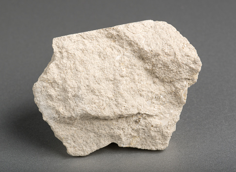

Rocă sedimentară · Baza industriei construcțiilor

Calcarul este o rocă sedimentară compusă în principal din calcit (carbonat de calciu, CaCO₃). Este foarte important în industria materialelor de construcție, în special la producerea cimentului și a varului.
Calcarul se formează în medii marine sau de apă dulce, prin acumularea de schelete și cochilii ale organismelor marine (corali, moluște, alge). Poate fi biochimic (organic) sau chimic (precipitat direct din apă).
Este una din cele mai răspândite roci sedimentare de pe Pământ și acoperă aproximativ 10–15% din suprafața uscatelor. În Moldova, calcarul este prezent în zona Codrilor și în văile râurilor principale.
| Proprietate | Valoare |
|---|---|
| Tip | Rocă sedimentară |
| Compoziție principală | CaCO₃ (calcit) |
| Culoare | Alb, gri, gălbui, bej |
| Duritate (Mohs) | 3 (calcit) |
| Densitate | 2.5–2.7 g/cm³ |
| Reacție la acid | Efervescență cu HCl diluat |
| Porozitate | Variabilă (0.1–30%) |
| Formare | Mediu marin, precipitare chimică |
Industria cimentului consumă cea mai mare parte din producția mondială de calcar. Prin ardere la 900 °C se obține varul nestins (CaO), iar prin stingere cu apă, varul stins Ca(OH)₂, esențial în construcții și agricultură pentru corectarea acidității solului.
Calcarul tăiat (piatra de calcar) a fost folosit ca material de construcție încă din Antichitate. Astăzi mai este utilizat în industria siderurgică (ca fondant în furnale), în purificarea apei potabile și în producerea hârtiei și sticlei.
Un fenomen geologic spectaculos legat de calcar este carstul — un tip de relief format prin dizolvarea rocilor carbonatice de către apele acide. Apa de ploaie absoarbe CO₂ din aer, formând acid carbonic slab (H₂CO₃), care dizolvă lent calcarul.
Rezultatul sunt peșteri, avene, polii (depresiuni circulare), doline și râuri subterane. Stalactitele (cresc din tavan) și stalagmitele (cresc de pe podea) se formează prin precipitarea CaCO₃ din apa care picură în peșteri. Procesul durează mii de ani — 1 cm de stalactită se formează în aproximativ 100 de ani.
| Tip | Caracteristică | Utilizare |
|---|---|---|
| Calcar compact | Dens, rezistent | Construcții, pavaj |
| Calcar numulitic | Conține fosile de numuliți | Ornamental |
| Cretă | Moale, poroasă | Scris, industrie |
| Travertin | Depus termal | Faianță, placare |
| Marmură | Calcar metamorfozat | Sculptură, construcții |